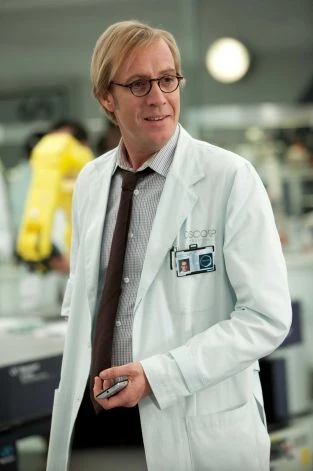

Peter parker, en la busqueda de la verdad acerca de la muerte de sus padres termina llegando a Oscorp y es ahí donde obtendrá sus poderes conocera al doctor Curt Connors que podria tener informacion clave sobre su padre pero el intento sera en vano pues el doctor gracias a un experimento se convertira en "el Lagarto" y Peter, siguiendo la ultima volutad de su tío, tendra que ponerse la mascara y tomar el papel de el hombre araña para proteger a la ciudad y a los que quiere.
Protagonista y la identidad secreta de Spider-Man
Interes amoroso de Peter y personaje clave para el desarrollo de la identidad de heroe de Peter
Antagonista principal de la pelicula, se convierte en el lagarto al tratar de encontrar un modo de recuperar su brazo
